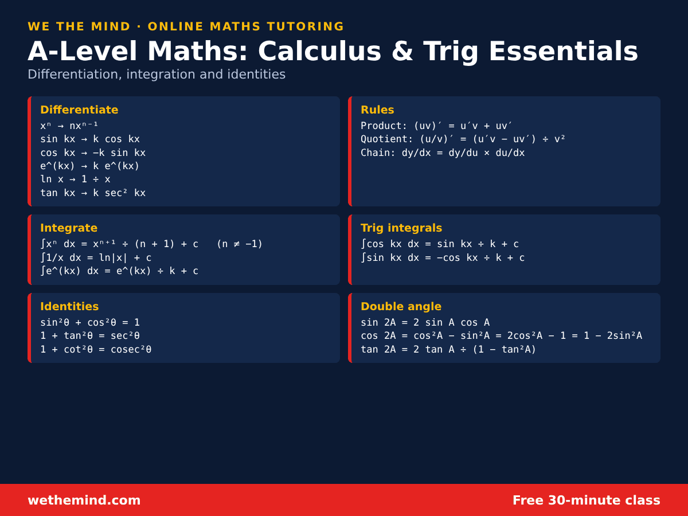

Education › A-Level Maths Online Tutor
A-Level Maths Online Tutor — Pure, Statistics & Mechanics
Build real fluency in calculus, trigonometry and proof, then apply it under exam conditions. Lessons follow your specification and your past papers.

Exam format at a glance
| Structure | Pure maths, plus statistics and mechanics (the exact split depends on your board) |
|---|---|
| Exams | Most boards: three 2-hour papers at the end of the course |
| Boards | Edexcel, AQA, OCR, WJEC — we work from your board's specification |
| Skills tested | Algebra, differentiation and integration, trigonometry, sequences, vectors, hypothesis testing, kinematics |
What we cover
- Algebra and functions, proof
- Coordinate geometry and sequences
- Trigonometry, including double angle formulae
- Differentiation from first principles and applications
- Integration and differential equations
- Exponentials and logarithms
- Statistical sampling, distributions and hypothesis tests
- Mechanics: kinematics, forces and moments
A typical 4-week plan
- Week 1: gap check on GCSE-to-A-Level algebra
- Week 2: calculus fluency with graded practice
- Week 3: past-paper questions by topic
- Week 4: full timed paper and an error review
How classes work
Every class is live and interactive on a shared digital whiteboard. Choose one-to-one mentoring, or a small group of 2–10 students on the same board and subject. Your first 30-minute class is free, and prices are on the pricing page.
Frequently asked questions
Which A-Level boards do you cover?
Edexcel, AQA, OCR and WJEC maths. Further maths topics can be discussed on a call.
Do you use past papers?
Yes. We use your board's past papers and mark schemes to teach exam technique.
Is it live or recorded?
Live, interactive online sessions, one-to-one or in small groups.
Can I try a class first?
Yes, the first 30 minutes are free.